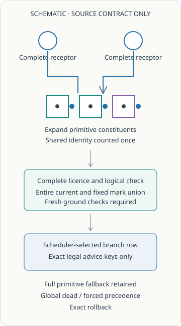

Receptor implementation
The controls agent authors the family receiver, current-state binding, consumer integration and mechanical control source. Its proposals retain full primitive fallback and have no automatic inventory authority.
A proof family supplies candidate primitive constituents around formulas already available at its receptors. Reuse still requires fresh licence checking, exact shared placement identities and agreement with the entire current point state. This page records the actual controls and their limits. Source review, runtime controls and proof discovery retain separate records.
The first cold invocation failed at an inherited metadata-view classmethod guard during adviser construction. No control case completed. This is an infrastructure failure, with no mathematical target acceptance or refutation.
Control outcomes: pending.
Measured costs: pending.
The declared shared inner bound is \(20\,\mathrm{s}\). The enclosing owned bound is \(60\,\mathrm{s}\) and \(512\,\mathrm{MiB}\), with a separate \(90\,\mathrm{s}\) caller bound. These are limits, not observed costs. Nested clocks are not added; observed post-write values and conservative finish reserves are separate. Staying within the limits does not make an incomplete stage accepted.
Saved attempt table loads from ROOT's preserved failure record; successor values remain pending.
Constructor or infrastructure failures remain part of the experiment. A later source successor receives its own fresh namespace and cost record; it does not replace an earlier failure. No completed census is inferred from the absence of an accepted output prefix.

The receiver uses dependency-complete current receptors. A selected reader with an unfilled premise is still pending. A same-call family continuation may be considered only after its preceding expansion has passed the complete checks.
The primitive expansion checks unit occupancy \(t\) and assigned markings \(m\). Shared constituents count once by full placement identity; missing marks remain different from assigned zero. Parameter-role labels are not logical sorts.
The implementation contract retains global dead ends, global forced moves, then earliest-generation branching, exact rollback and the complete canonical primitive fallback. Advice may order exact legal keys at the selected branch row; it does not redefine the frontier, remove candidates or grant a new logical rule.
Source inspection establishes the intended interface and preserved code bodies. Actual controls establish only their recorded coverage. Neither establishes an independently accepted full search trajectory.
The rows below display the same saved six-command ground expansion in both current contexts, with formulas, English, physical addresses, ordered reads and literal \(t/m\) records. A ground instance is distinct from a universally valid family, a newly searched target proof and a complete \(24\)-row board.
The full original hypotheses are retained. The conclusion consumes original occurrence indices 1 and 2; occurrence 0 remains in the displayed commands without contributing to the conclusion. This is one body reused in two contexts, not two new theorem discoveries.
No actual ground-row packet is attached.
The controls agent authors the family receiver, current-state binding, consumer integration and mechanical control source. Its proposals retain full primitive fallback and have no automatic inventory authority.
The source/display agent reviews mathematical interfaces, source deltas and saved metadata, and prepares this reader. Another author's code is inspected independently; source review is kept separate from runtime observations.
The arithmetic agent prepares open-parameter substitution, full-context generalization and a genuine unary point interface. Its current calibration declaration is \(\forall n\;(n+S(0)=S(n))\) under the addition-recursion axioms and empty original \(\Gamma\). This remains source work, with no induction or production proof-search admission.
ROOT freezes inputs, authorizes and runs each actual stage, reconciles caller and owned resources, integrates saved outcomes and publishes verified reports. Parallel authoring saves coordination time; mathematical evidence still comes from the actual scoped checks.
A controls-only ROOT grant does not activate a scientific family search or admit a primitive inventory. The current equality-transport family is intended to reuse complete equality and incidence receptors; it does not derive the I.2 equality merely because that axiom is available. The earlier failed constructor remains an incomplete attempt; the successor completed the recorded controls.
These controls establish no new geometry RL episode, policy update, search-speed advantage, prover superiority or universal proof palette. The method uses conventional symbolic dependency reasoning and exact point compatibility. A fixed machine's computational palette is a separate track from this address-dependent proof encoding.
Repeated identical hypotheses, an assigned zero mark, aliased inputs, a successful second-family chain and an independent complete dynamic-domain audit remain unexercised. The pending-reader placement and sole-key exclusion are explicitly nonlogical mechanical fixtures.
ROOT's actual disposition, complete control outputs, resource records and saved-evidence review are pending attachment.
Notebook157: complete earlier extraction · Native symbolic attribution control · Configured-machine tile computation
This display invokes no compiler, checker, graph, search or learner. Its saved actual packet is presentation data, not an activation or scientific admission schema. The reproduction package retains both actual attempts, the original reviews and the independently reviewed guard repair.